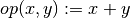
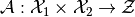
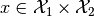
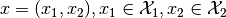
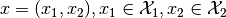
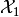
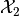
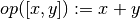

Frequently asked questions¶
Abbreviations: Q uestion -- P roblem -- S olution
General errors¶
Q: When importing
odl, the following error is shown:File "/path/to/odl/odl/__init__.py", line 36 from . import diagnostics ImportError: cannot import diagnostics
However, I did not change anything in
diagnostics? Where does the error come from?P: Usually, this error originates from invalid code in a completely different place. You may have edited or added a module and broken the import chain in some way. Unfortunately, the error message is always as above, not specific to the invalid module.
Another more subtle reason can be related to old bytecode files. When you for the first time import (=execute) a module or execute a script, a bytecode file is created, basically to speed up execution next time. If you installed
odlwithpip -e(--editable), these files can sometimes interfere with changes to your codebase.S: Here are two things you can do to find the error more quickly.
Delete the bytecode files. In a standard GNU/Linux shell, you can simply invoke (in your
odlworking directory)find . -name *.pyc | xargs rm
Execute the modules you changed since the last working (importable) state. In most IDEs, you have the possibility to run a currently opened file. Alternatively, you can run on the command line
python path/to/your/module.pyThis will yield a specific error message for an erroneous module that helps you debugging your changes.
Q: When adding two space elements, the following error is shown:
TypeError: unsupported operand type(s) for +: 'DiscretizedSpaceElement' and 'DiscretizedSpaceElement'
This seems completely illogical since it works in other situations and clearly must be supported. Why is this error shown?
P: The elements you are trying to add are not in the same space. For example, the following code triggers the same error:
>>> x = odl.uniform_discr(0, 1, 10).one() >>> y = odl.uniform_discr(0, 1, 11).one() >>> x - y
In this case, the problem is that the elements have a different number of entries. Other possible issues include that they are discretizations of different sets, have different data types (dtype), or implementation (for example CUDA/CPU).
S: The elements need to somehow be cast to the same space. How to do this depends on the problem at hand. To find what the issue is, inspect the
spaceproperties of both elements. For the above example, we see that the issue lies in the number of discretization points:>>> x.space odl.uniform_discr(0, 1, 10) >>> y.space odl.uniform_discr(0, 1, 11)
In the case of spaces being discretizations of different underlying spaces, a transformation of some kind has to be applied (for example by using an operator). In general, errors like this indicates a conceptual issue with the code, for example a "we identify X with Y" step has been omitted.
If the
dtypeorimpldo not match, they need to be cast to each one of the others. The most simple way to do this is by using theDiscretizedSpaceElement.astypemethod.
Q: I have installed ODL with the
pip install --editableoption, but I still get anAttributeErrorwhen I try to use a function/class I just implemented. The use-without-reinstall thing does not seem to work. What am I doing wrong?P: You probably use an IDE like Spyder with integrated editor, console, etc. While your installation of the ODL package sees the changes immediately, the console still sees the version of the package before the changes since it was opened.
S: Simply close the current console and open a new one.
Usage¶
Q: I want to write an
Operatorwith two input arguments, for example
However, ODL only supports single arguments. How do I do this?
P: Mathematically, such an operator is defined as

ODL adhers to the strict definition of this and hence only takes one parameter . This product space element
 is then a tuple of elements .
is then a tuple of elements .S: Make the domain of the operator a
ProductSpaceif  and  areLinearSpace's, or aCartesianProductif they are mereSet's. Mathematically, this corresponds to
Of course, a number of input arguments larger than 2 can be treated analogously.